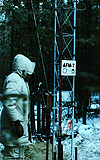

P.I.(s): Stan Shewchuk -- Saskatchewan Research Council (SRC)
Co-I(s): Brett Smith, Heather Osborne, and Kim Young -- SRC
Objectives: The Saskatchewan Research Council, located in Saskatoon, has implemented and maintained a meso-network of nine (9) or ten (10) automated meteorological stations located in the Northern and Southern study areas and the intervening transect. Standard meteorological and radiation data is being collected and 15 minute average values produced for BORIS. Some limited analysis of fields is also available. These data are available from the fall of 1993 through the fall of 1996.
 |  |
| SRC Met tower description figure | SRC Met tower in LaRonge |
Objectives:
The Saskatchewan Research Council, located in Saskatoon, has implemented and maintained a meso network of nine (9) or ten (10) automated meteorological stations located in the Northern and Southern study areas and the intervening transect. Standard meteorological and radiation data is being collected and 15 minute average values produced for BORIS. Some limited analysis of fields is also available. These data are available from the fall of 1993 through the fall of 1994.
Types of Data Collected:
Synoptic scale surface data
Equipment Used:
Standard Instrumentation
Summary of Places and Times of Measurements:
Measurements were collected at all sites listed in EXPLAN continuously throughout the IFC campaign periods for the AMS system
Known Problems:
Aside from normal wear of sensors in continuous operation, our MESONET sensors were particularly sensitive to lightning induces transient currents at various times during the project.
AFM Overview || AFM-1 | AFM-2 | AFM-3 | AFM-4 | AFM-5 | AFM-6
AFM-7 | AFM-8 | AFM-9 | AFM-11 | AFM-12 | AFM-13 | AFM-14 | AFM-15
 Send a data request to the BOREAS Data Manager (BOREAS Investigators only)
Send a data request to the BOREAS Data Manager (BOREAS Investigators only)
E-Mail a comment on this page to the curator 
Send e-mail to Keith Kaminsky, the BORIS representative for the AFM group
Return to the AFM Overview
Return to the BOREAS Science Groups Overview
Return to the BOREAS Home Page
Last Updated: October 20, 1997
{kind=link}